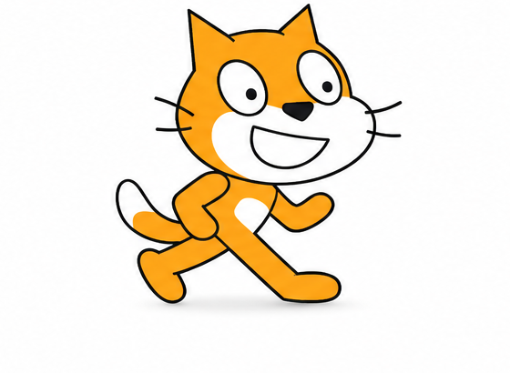
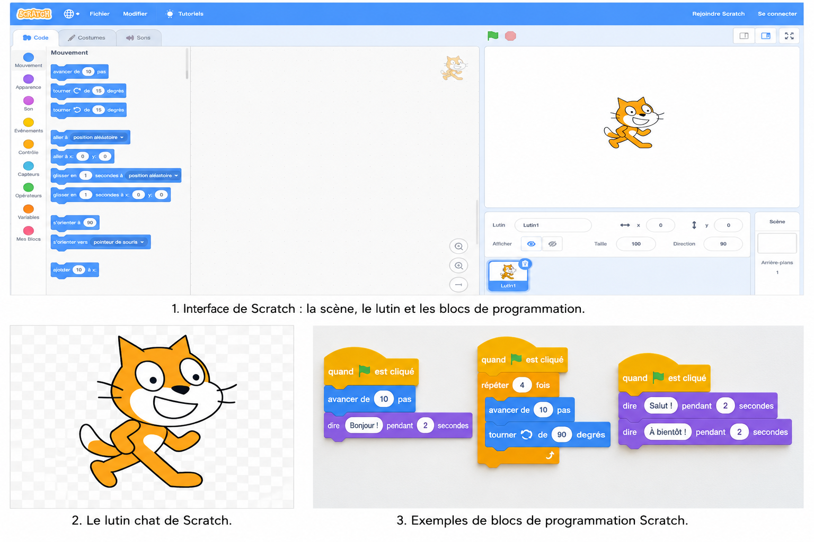
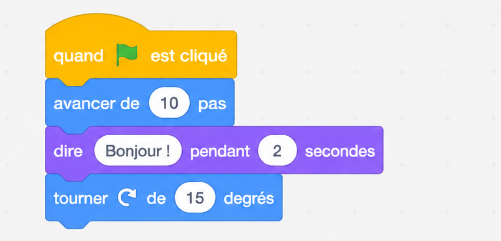

Activité 1 : faire bouger le lutin
Clique sur le bouton pour donner une instruction au lutin.
🐱
Le lutin attend ton instruction.
Page leçon
Découvrir Scratch et les premières notions de programmation visuelle en EB3.
Ce site éducatif interactif cible des élèves de EB3. Il propose une leçon de sciences numériques sur Scratch, des ressources multimédias, trois activités interactives, des fonctions d’accessibilité et une évaluation formative.
Élèves de EB3 débutants en programmation visuelle.
Comprendre comment utiliser des blocs Scratch pour donner des instructions simples à un lutin.
Scratch est un environnement de programmation visuelle. Au lieu d’écrire de longues lignes de code, l’élève assemble des blocs colorés pour créer une animation, un jeu ou une histoire interactive.



Écoute l’explication audio ou consulte les vidéos pour revoir la notion.
Clique sur le bouton pour donner une instruction au lutin.
Le lutin attend ton instruction.
Choisis l’ordre correct pour créer un petit programme.
Mission : le lutin doit dire « Bonjour ! ». Quel bloc faut-il choisir ?
La leçon suit une progression simple : observation, explication, manipulation, entraînement et évaluation. Les activités interactives favorisent l’apprentissage actif et aident l’élève à vérifier immédiatement sa compréhension.